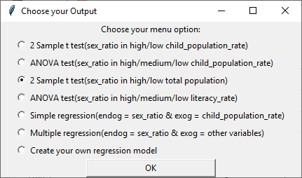

Data Analytics
If you want to see the code of my projects, Click Here
Automatic Data Analysis Program in Python
This program is an automatic analysis program which shows the relationship between sex ratio and the other varialbe user chose. The program provides serveral data analytic test options such as t Test, ANOVA test, Regression test.
If you choose one test option it will show you a brif analysis report about the relationship between sex ratio and the other variable
